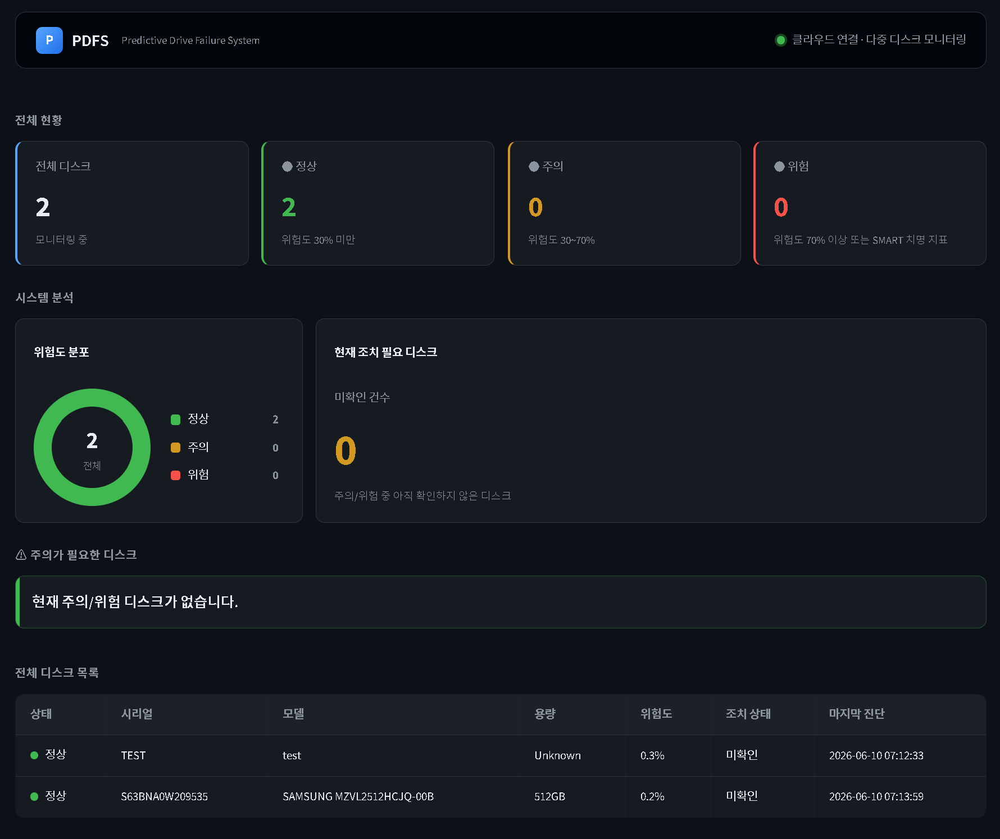
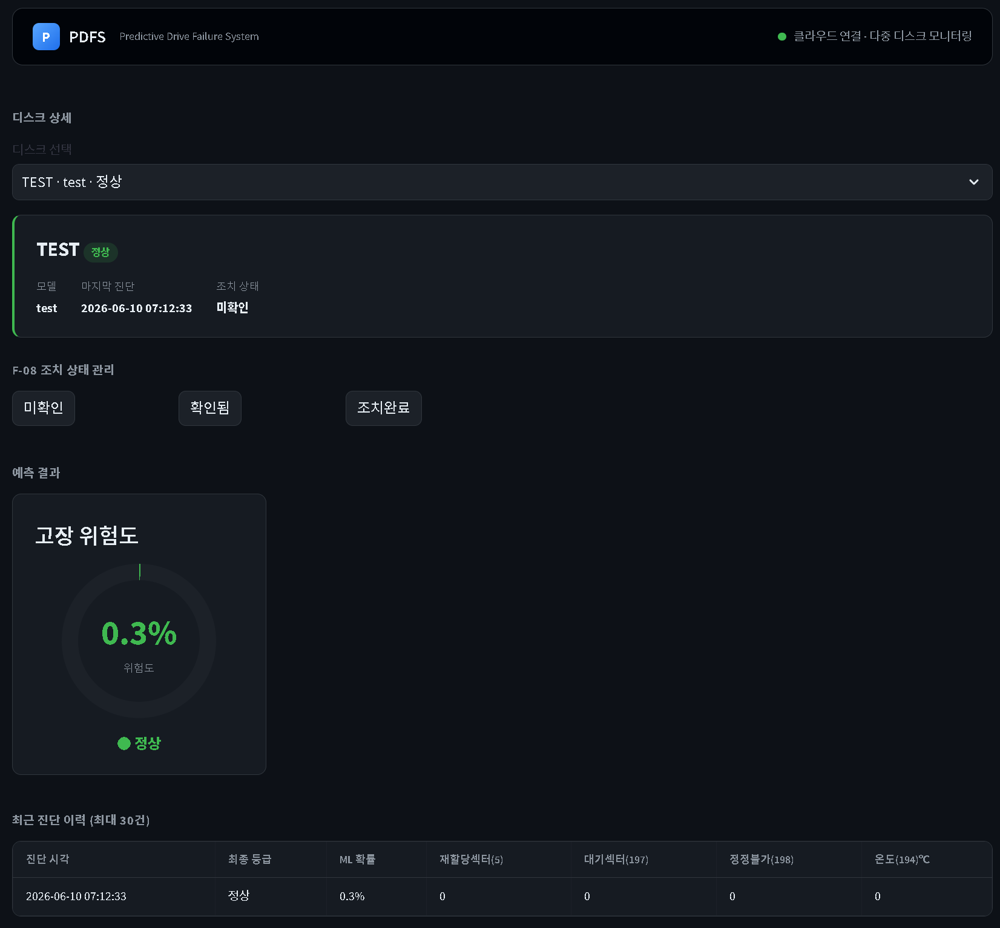

01
프로젝트 개요
02
팀원 소개
03
기술 스택
04
WBS
05
요구사항 명세서
06
메뉴 트리 / 사용자 시나리오
07
와이어프레임
08
스토리보드
09
테이블 정의서 / ERD
10
테스트 케이스
11
트러블 슈팅 및 회고
12
느낀점
13
향후 계획
- 저장장치 고장 예측 시스템 -
HPDFS는 클라이언트 PC의 저장장치 SMART 데이터를 수집하고, 머신러닝 모델과 규칙 기반 보정을 결합해 고장 위험도를 진단하는 시스템입니다.
기획, 데이터/모델, 백엔드, 프론트엔드, 인프라, 테스트 영역을 나누어 짧은 기간 안에 기능 구현과 발표 자료를 병행했습니다.
Backblaze 데이터셋 정리, SMART 피처 선정, 모델 학습 및 성능 평가를 담당했습니다.
진단 API, DB 모델, 저장 흐름 등 서버 중심 기능을 담당했습니다.
대시보드, 디스크 목록, 상세 화면 등 사용자 화면 구성을 담당했습니다.
Agent 수집 구조, Docker Compose, Nginx, Kubernetes 배포 파일을 담당했습니다.
Backend와 DB 흐름 검증, 통합 테스트, 시연 데이터 준비를 담당했습니다.
로컬 수집 Agent와 서버형 진단 대시보드를 분리하고, Docker 기반으로 실행 환경을 통합했습니다.


프로젝트를 마무리하며 각자의 경험과 배운 점을 정리했습니다.
현재 구현된 로컬 Agent 기반 진단 흐름을 바탕으로, 수집 안정성, 예측 성능, 운영 기능을 단계적으로 확장할 계획입니다.